![[Plot]](images/VectorFields_6.gif)
Vector fields
| > | restart; with(LinearAlgebra): with(VectorCalculus): with(plots): |
Warning, the names &x, CrossProduct and DotProduct have been rebound
Warning, the assigned names <,> and <|> now have a global binding
Warning, these protected names have been redefined and unprotected: *, +, ., D, Vector, diff, int, limit, series
Warning, the name changecoords has been redefined
To use vector fields in Maple, we need to set the coordinate system. For us this means we have to say whether we are using [x,y] or [x,y,z]. Once this is said, it remains in effect until changed.
| > | SetCoordinates( 'cartesian'[x,y] ); |
Now we define a vector field as a vector whose components depend on the variables.
| > | F:= VectorField( <x*y,-y^2*x> ); |
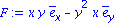
| > | SetCoordinates( 'cartesian'[x,y,z] ); |
| > | gravity:= VectorField( -<x,y,z> / sqrt(x^2+y^2+z^2)^3 ); |
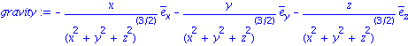
There are functions in plots for plotting vector fields.
| > | fieldplot( F, x=-1..1, y=-1..1, scaling=constrained ); |
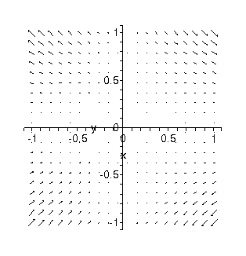
| > | fieldplot( [y,-x], x=-2..2,y=-2..2 ); |
| > | fieldplot3d( gravity, x=-1..1, y=-1..1, z=-1..1, arrows=THICK,axes=boxed ); |
![[Plot]](images/VectorFields_7.gif)
| > | fieldplot3d( [ y/z, -x/z, z/4], x=-1..1, y=-1..1, z=1..3, axes=normal) ; |
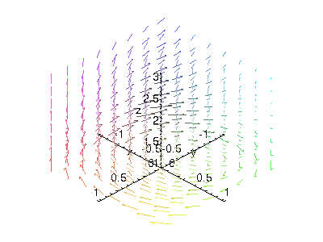
Gradients and conservative fields
Maple makes it easy to check whether a field is conservative and find a potential function.
| > | f:= ScalarPotential( gravity ); |
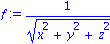
Check:
| > | Gradient( f, [x,y,z] ); |
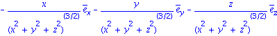
If the field does not have a potential, nothing is returned.
| > | F:= VectorField( <cos(x), x*y, 1> ); |
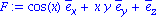
| > | ScalarPotential( F ); |
Divergence and curl
Divergence and curl are straightforward to compute. Tip: For a planar vector field, define it as a 3D field with a third component of zero.
| > | F:= VectorField( <x*y+x^2,-x*y^2,0> ); |
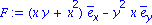
Divergence is easy. We can even use the "del dot F" notation.
| > | divF:= Divergence( F ); |
| > | Del . F; |
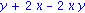
Curl is more of the same.
| > | curlF:= Curl( F ); |
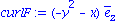
| > | Del &x F; |
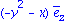
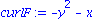
| > | with(plots): |
| > | p1:= fieldplot( [F[1],F[2]], x=-3..3,y=-3..3 ): |
| > | pd:= contourplot( divF, x=-3..3,y=-3..3 ): |
| > | pc:= contourplot( curlF[3], x=-3..3,y=-3..3 ): |
| > | display( {p1,pd}, scaling=constrained ); |
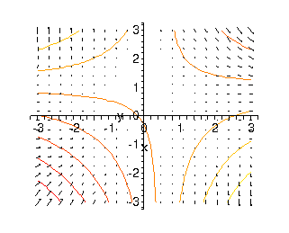
| > | display( {p1,pc}, scaling=constrained ); |
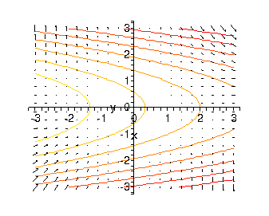
| > |